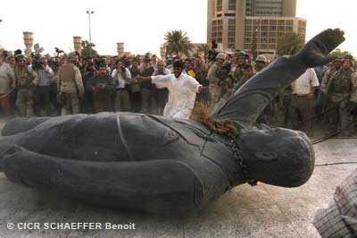

Troubles intérieurs et tensions internes

Lorsque des mécontentements populaires éclatent et que ces derniers s’accompagnent de violence armée, l’on parle, en droit international humanitaire, de troubles et tensions internes.
Les situations de troubles intérieurs sont celles où il existe, sur le plan interne, un affrontement qui présente un certain caractère de gravité ou de durée et comporte des actes de violence. Ces derniers peuvent revêtir des formes variables, allant de la génération spontanée d'actes de révolte à la lutte entre des groupes plus ou moins organisés et les autorités au pouvoir. Dans ces situations, qui ne dégénèrent pas nécessairement en lutte ouverte, les autorités au pouvoir font appel à de vastes forces de police, voire aux forces armées, pour rétablir l'ordre intérieur.
Les situations de tensions internes sont des situations de tension grave (politique, religieuse, raciale, sociale, économique, etc.) ou encore de séquelles d'un conflit armé ou de troubles intérieurs. Ces situations présentent l'une ou l'autre de ces caractéristiques, sinon toutes à la fois:
- des arrestations massives ;
- un nombre élevé de détenus « politiques » ;
- l'existence probable de mauvais traitements ou de conditions inhumaines de détention ;
- la suspension des garanties judiciaires fondamentales, en raison soit de la promulgation d'un état d'exception, soit d'une situation de fait;
- des allégations de disparitions.
| Sources |
Deuxième Protocole additionnel aux Conventions de Genève, 1977 – article 1er, par.2
Commentaires de l’article 1er, par.2 du deuxième Protocole additionnel aux Conventions de Genève, 1986 – par.4471 à 4479
| Résumé | |
Il y a des troubles intérieurs lorsque, sans qu'il y ait conflit armé, l'Etat utilise la force armée pour maintenir l'ordre; il y a tensions internes lorsque, sans qu'il y ait troubles intérieurs, l'emploi de la force est une mesure préventive pour maintenir le respect de la loi et de l'ordre.